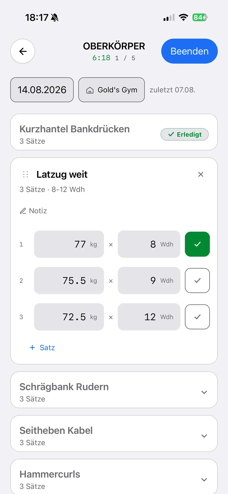
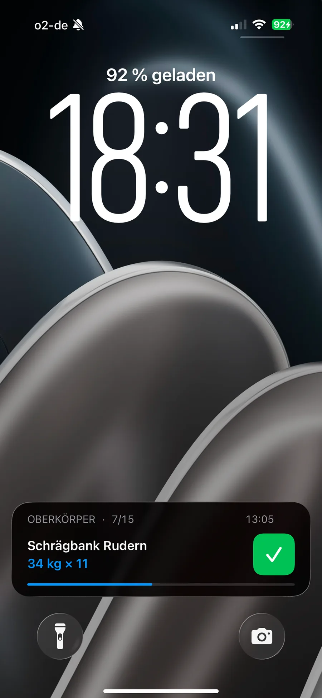
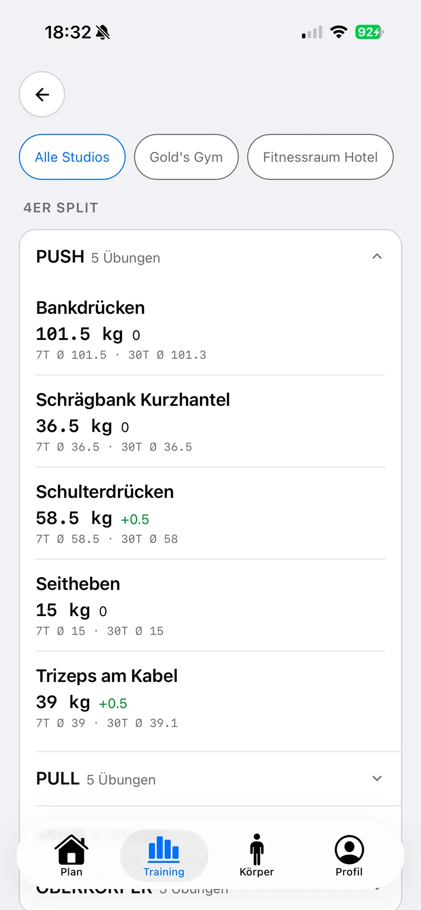
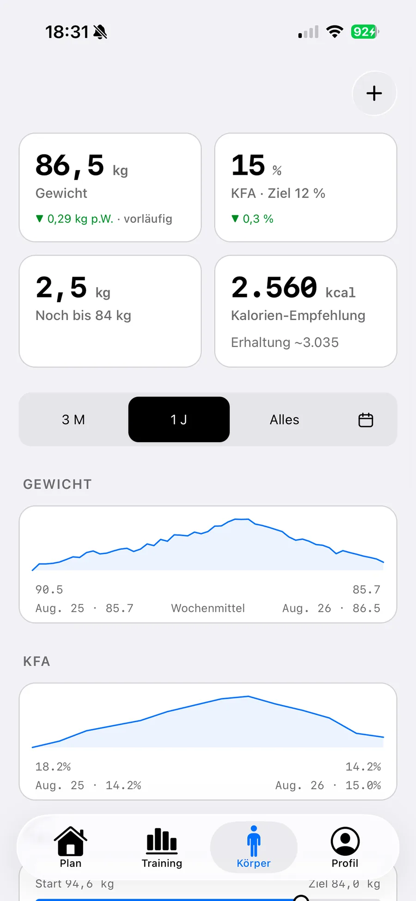
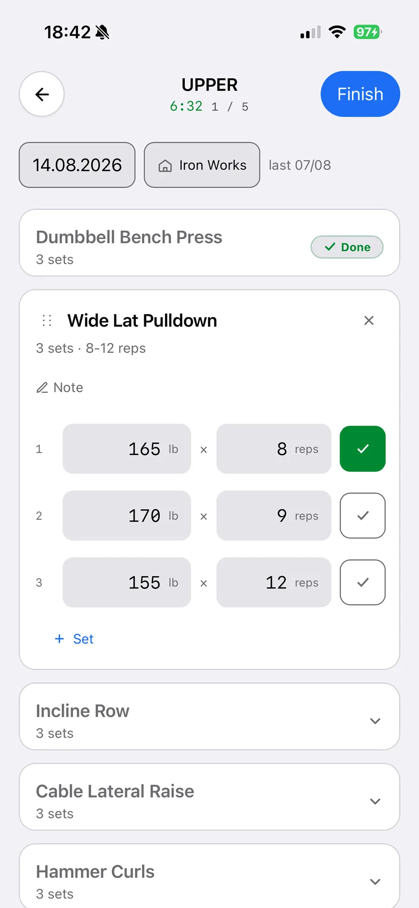
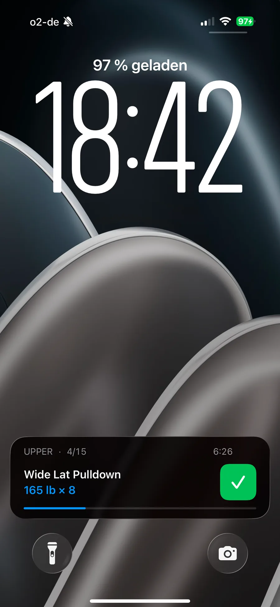
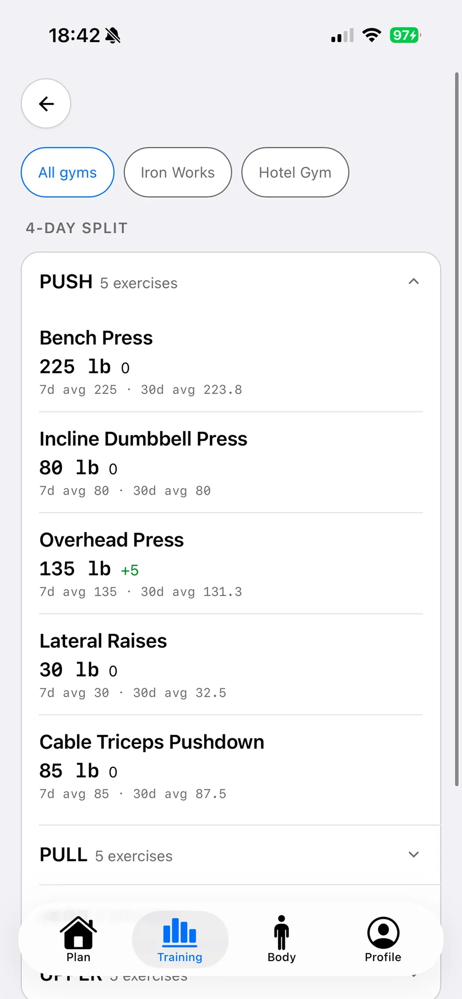
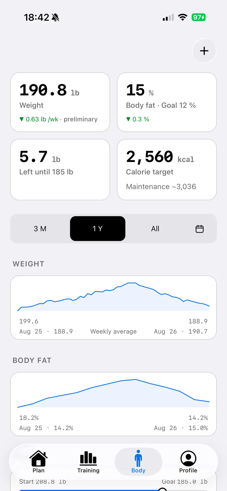

Eintragen, zwischen zwei Sätzen.
Gewicht, Wiederholungen, Haken. Die Werte vom letzten Mal stehen schon da. Nur die Übung, an der du gerade bist, ist offen — der Rest bleibt zu.
Für immer kostenlos
gymLog ist ein Trainingstagebuch für Leute, die ihren Plan schon haben. Kein Konto, keine Cloud, kein Abo. Alles bleibt auf deinem iPhone.
Im App Store ladenÜbungen
Sprachen
Preis
Free for ever
gymLog is a workout log for people who already have a plan. No account, no cloud, no subscription. Everything stays on your iPhone.
Download on the App StoreExercises
Languages
Price
Auf einen Blick
Wer nur zehn Sekunden hat, liest nur das hier.
At a glance
Ten seconds is enough. This is all of it.
Funktionen
Vier Dinge, die gymLog kann. Mehr nicht — und das mit Absicht.

Gewicht, Wiederholungen, Haken. Die Werte vom letzten Mal stehen schon da. Nur die Übung, an der du gerade bist, ist offen — der Rest bleibt zu.

Das laufende Training steht auf dem Sperrbildschirm, mit Zeit und Fortschritt. Sätze lassen sich direkt von dort abhaken, ohne die App zu öffnen.

Gewichte lassen sich pro Studio trennen. Dieselbe Maschine zieht woanders anders — gymLog vergleicht dich mit dir selbst, am selben Gerät, im selben Studio.

Gewicht, Körperfett, Ziel und Tempo, als Kurve über Monate. Dazu eine Kalorienempfehlung, gerechnet aus deinen eigenen Daten.
Features
Four things gymLog does. Nothing more, and that is on purpose.

Weight, reps, tick. Last time’s numbers are already there. Only the exercise you are on stays open, the rest stays closed.

Your running workout sits on the Lock Screen with time and progress. Tick sets off from there without opening the app.

Keep weights separate per gym. The same machine pulls differently somewhere else. gymLog compares you with yourself, on the same machine, in the same gym.

Weight, body fat, goal and pace as a curve over months. Plus a calorie recommendation, worked out from your own numbers.
Privat
Nicht als Einstellung. Als Bauweise.
Es gibt keine Anmeldung. Nichts zu registrieren, nichts zu vergessen.
Deine Trainings liegen auf deinem iPhone, sonst nirgends.
Keine Analytics, keine Werbe-IDs, keine Weitergabe an Dritte.
Apple Health? Auf Wunsch schreibt gymLog Trainings, Gewicht und Körperfett dorthin — und liest nichts. Details in der Datenschutzerklärung.
Privacy
Not as a setting. As the way it is built.
There is no sign-up. Nothing to register, nothing to forget.
Your workouts sit on your iPhone and nowhere else.
No analytics, no advertising IDs, nothing passed to third parties.
Apple Health? If you want it, gymLog writes workouts, weight and body fat there, and reads nothing. Details in the privacy policy.
Preis
Dauerhaft. Es wartet keine Pro-Version dahinter.
Enthalten
Nicht dabei
Unterstützen
gymLog hat keinen Server. Der Betrieb kostet fast nichts: Zeit und die jährliche Gebühr, die Apple dafür verlangt, dass die App im Store bleiben darf. Eine Spende schaltet nichts frei. Die App ist vollständig und bleibt es, auch ohne einen Cent.
Price
For good. There is no Pro version waiting behind it.
Included
Not in it
Support
gymLog has no server. Running it costs almost nothing: my time and the yearly fee Apple charges to keep the app in the App Store. A tip unlocks nothing. The app is complete and stays that way, without a cent.
Vergleich
Ehrlich verglichen — auch da, wo gymLog verliert.
Comparison
Compared honestly, including where gymLog loses.
FAQ
Ja. Alle Funktionen, ohne In-App-Käufe, ohne Abo. Es gibt keine Pro-Version, die später Geld will.
Nein. gymLog hat keine Anmeldung. App laden, Plan anlegen, trainieren.
Ja, immer. gymLog braucht nie eine Verbindung — auch nicht im Keller-Studio ohne Empfang.
Auf deinem iPhone, sonst nirgends. Es gibt keinen Server und keine Cloud.
Ja, über die JSON-Sicherung: auf dem alten Gerät exportieren, auf dem neuen einlesen. Das ist der einzige Weg — eine automatische Synchronisierung gibt es nicht.
Nein. gymLog ist eine iOS-App, und eine Android-Version ist nicht geplant.
Ja. 170 Übungen sind schon dabei, nach acht Körperregionen gegliedert — und in deinen Plänen kannst du Übungen frei benennen.
Ja, schreibend: Trainings, Gewicht und Körperfett landen auf Wunsch in Health. gymLog liest nichts aus Health aus.
Nein. gymLog ist ein Tagebuch, kein Trainer. Es ist für Leute gebaut, die ihren Plan schon haben.
Weil es keinen Server gibt. Das ist der Preis dafür, dass deine Daten dein Gerät nie verlassen. Beim Gerätewechsel nimmst du die Sicherungsdatei mit.
FAQ
Yes. Every feature, no in-app purchases, no subscription. There is no Pro version that asks for money later.
No. gymLog has no sign-up. Download it, create a plan, train.
Yes, always. gymLog never needs a connection, not even in a basement gym with no signal.
On your iPhone and nowhere else. There is no server and no cloud.
Yes, through the JSON backup: export on the old device, read it in on the new one. That is the only way. There is no automatic sync.
No. gymLog is an iOS app and an Android version is not planned.
Yes. 170 exercises are already there, sorted into eight body regions, and you can name exercises freely in your plans.
Yes, writing only: workouts, weight and body fat go to Health if you want them to. gymLog reads nothing out of Health.
No. gymLog is a log, not a coach. It is built for people who already have a plan.
Because there is no server. That is the price of your data never leaving your device. When you change phones, you take the backup file with you.
Kostenlos, ohne Konto
Laden, Plan eintragen, trainieren. Mehr ist es nicht.
Free, no account
Download it, type in your plan, train. That is all it is.